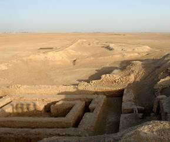

The Epic of Gilgamesh: Lost and Found
by Chris Mack
December 8, 2018
The Epic of Gilgamesh is sometimes described as
the world’s first great work of literature.
But the story of how that poem came to be lost and then
rediscovered after 2500 years is itself an epic, if somewhat less
grandiose.
Gilgamesh is thought by scholars to have been
an historical figure, king of the Sumerian city-state of Uruk during
the 27th century BCE.
Uruk was a major city, with 50,000 – 80,000 residents at its
height around 2900 BCE.
The earliest texts from Uruk date to 3300 BCE.
The city was located about 100 miles south of present-day
Bagdad, near the Euphrates River.
Uruk is thought to be the city of Erech mentioned in Genesis
and is sometimes referred to as “the first city in human history.”
|
 |
|
Excavations in Uruk (source:
Wikipedia). |
Discovered by British archeologist William
Loftus in 1849 and first excavated in 1850-1854, the city was one of
the largest in the Sumerian and Babylonian eras, with an area of
over 2 square miles.
One of its distinguishing archeological features is the large
surrounding wall whose construction was attributed to Gilgamesh by
later ancient writers and referred to in the Epic of Gilgamesh.
Gilgamesh is mentioned in the Sumerian King
list, an ancient stone tablet that provides a chronical of the kings
of Sumer through about 1700 BCE.
His place in the list occupies an interesting point of
transition from the legendary to the historical.
Before Gilgamesh every king is recorded as reigning for over
100 years, some for the tens of thousands of years.
After Gilgamesh, dynasties lasted from 3 to 36 years and this
portion of the list has been proven to be historically accurate.
Gilgamesh is listed as having ruled for 126 years, and thus
seems to represent the last of the god-like kings.
|
|
|
Cuneiform writing (source:
Wikipedia). |
The Sumerian civilization dates to about 5000
BCE, disappearing in about 1700 BCE after the rise of Babylonia.
Much of what we know about Sumer comes from cuneiform texts
written on clay tablets.
Cuneiform (the name means “wedged shape”) is one of the
earliest forms of writing, invented by the Sumerians in about 3000
BCE.
Writing became increasingly common during the
centuries around when Gilgamesh ruled.
King Shulgi of Ur (30 miles south of Uruk, reign 2094 – 2047
BCE) became the first major patron of literature, commissioning a
series of Sumerian poems about the exploits of Gilgamesh, probably
based on even earlier works.
These poems eventually became the basis for the original
Babylonian version of the Gilgamesh epic.
Fragments of the Epic of Gilgamesh has been
found in 14 cities around the Near East, and traveling performers
likely told the epic during the same time period as the early days
of the Homeric epics.
The first version of the Epic of Gilgamesh was written in about 2000
BCE. The flood story is
thought to have been added to the epic at around 1200 BCE based on
earlier Sumerian flood tales.
The oldest Sumerian flood story, with many of the same
elements as found in the Epic of Gilgamesh, was discovered at Nippur
and dates from 1600 BCE.
North of Sumer the Assyrian Empire rose from
the city-sate of Assur (Ashur) on the Tigris River in northern Iraq
starting around 2600 BCE. Assyria
grew to be an impressive empire that stretched from western Iran to
Egypt, and from southern Turkey to northern Saudi Arabia.
Tiglath-Pileser III (reign 745-727 BCE) created the world’s
first professional army and conquered most of the Near East.
While the formal language of the Assyrian Empire was
Akkadian, Tiglath-Pileser III established Aramaic as the de facto
language of the people throughout the empire.
Assyria conquered Israel in 710 BCE and conquered Egypt and
Babylon multiple times in this era.
This great empire collapsed with the fall of Nineveh in 612
BCE.
Central to the story of the Epic of Gilgamesh
as we know it today is the rule of King Ashurbanipal (reign 669 –
627 BCE). The capital
of Assyria was moved to Nineveh, just east of present-day Mosul in
Iraq, by Ashurbanipal’s grandfather and it quickly grew to be the
largest city in the world (>100,000 residents).
Ashurbanipal was a rare king who learned to both read and
write in multiple languages (rather than relying on scribes for this
specialized skill as did most kings).
He built a great library and spent much of his life
collecting and copying the great works of literature of his day.
Records indicate that Ashurbanipal acquired one copy the Epic
of Gilgamesh (written in Akkadian) in 647 BCE.
It is from this library that the Epic of Gilgamesh will
eventually be found.
Like many empires, overextension eventually led
to Assyria’s downfall.
Instability followed Ashurbanipal’s death, with Babylonia declaring
independence shortly after.
Rebels from Babylonia to the south and Persia to the east
eventually attacked Ninevah, and the capital fell in 612 BCE.
The fiery end to the palaces of Ashurbanipal left the library
collapsed and in ruin.
Ironically, though, it was the dramatic destruction of the library
that led to the preservation of its works.
Broken tablets from tens of thousands of books lay buried
under the rubble of Nineveh for the next 2500 years.
Found
The city of Nineveh was rediscovered by the
British Archeologist Austen Layard in 1840.
It was a formless mound of dirt 40 feet high and a mile wide
that had remained lost for over two millennia.
Excavating with his assistant Hormuzd Rassam, a native of
Mosul, Ashurbanipal’s library was discovered in 1853 and eventually
twenty-five thousand tablets would be sent to the British Museum.
But nobody could read them, since cuneiform writing was only
then being deciphered, and Akkadian could not yet be translated.
Cuneiform was decoded in the mid-19th
century when French scholar Eugène Burnouf discovered that it
contained an alphabet of 30 letters.
Akkadian began to be understood when British polymath Henry
Rawlinson translated the Behistun Inscription (the equivalent of the
Rosetta stone for the Egyptian language) and found that the language
was made up of about 600 phonetic syllables written in cuneiform
combined to create words.
Over a period of twenty years after the discovery of the
Ashurbanipal library the Akkadian language began to be translated.
|
|
|
Epic of Gilgamesh, Tablet 11: Story of the Flood.(source:
Wikipedia). |

An assistant curator at the British Museum,
George Smith, was slowly working through the many tablet fragments
found in Nineveh when in 1872 he came across a fragment of the flood
story from the Epic of Gilgamesh.
Parallels to the Biblical story of Noah were immediately
obvious and electrified Smith.
In December of that year he gave a lecture at the Biblical
Archeology Society in London, attended by Prime Minister William
Gladstone, and his discovery became an instant sensation.
All of a sudden these obscure tablets from an obscure era of
history became the talk of the nation.
Smith would eventually be sent to Iraq three
times where he found many of the missing pieces of the Epic of
Gilgamesh, including the missing parts of the flood story.
He published his translation of the flood story in 1875, and
died of dysentery in Allepo in 1876 at age 36 while returning from
his last archeological dig.
|
|
|
Translation of a portion of Table 11, Epic of Gilgamesh
(source: David
Damrosch 2006). |
The Akkadian version of the Epic of Gilgamesh
remains incomplete.
Only about 2,000 out of the poem’s 3,000 lines have been discovered.
David Damrosch, “The Buried Book: the Loss and
Rediscovery of the Great Epic of Gilgamesh”, Henry Holt and Co., New
York (2006).
Alexander Heidel, “The Gilgamesh Epic and Old
Testament Parallels”, University of Chicago Press (1945).
Chris Mack is a writer in Austin, Texas.
© Copyright 2018, Chris Mack.
More essays...